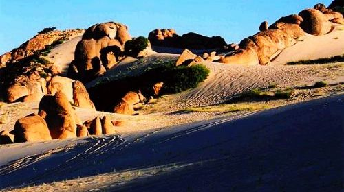
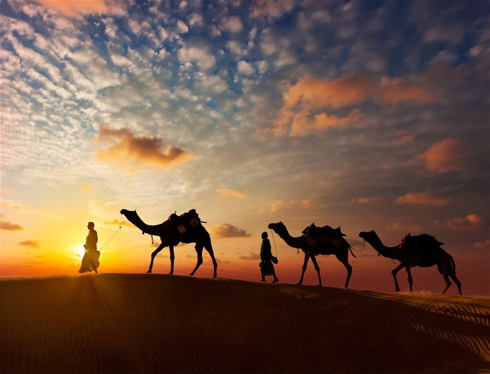

勃隆克沙漠旅游区位于内蒙古赤峰市翁牛特旗朝格温都苏木（乡），距赤峰市120公里，是距京津冀辽等省区最近的集沙漠、草原、奇山、怪石、湖泊、原始次生林于一体的旅游景区。赤峰市位于内蒙古自治区的东南部，蒙冀辽三省区的接壤处。“赤峰”是因城区的东北角有一座赭红色的山峰而得名。翁牛特旗位于赤峰市腹部，旗政府驻地乌丹距赤峰89公里。以乌丹镇为中心，四周辐射三、四个景点，最为出名的就是勃隆克和玉龙。
开放时间：周一——周日8：am——16：pm 门票：80/人 中文名:勃隆克沙漠 主要项目:赛马、射箭、滑翔 生活服务区:提供民族餐、中餐、快餐等。 活动:观赏自然奇景和体验蒙古族风情 特点:勃隆克沙漠。这里有金色的沙山、碧绿的湖水、如茵的草原、奇异的怪石。种种看似奇异的组合就这样完美地融在一处，让人如在梦中一般。